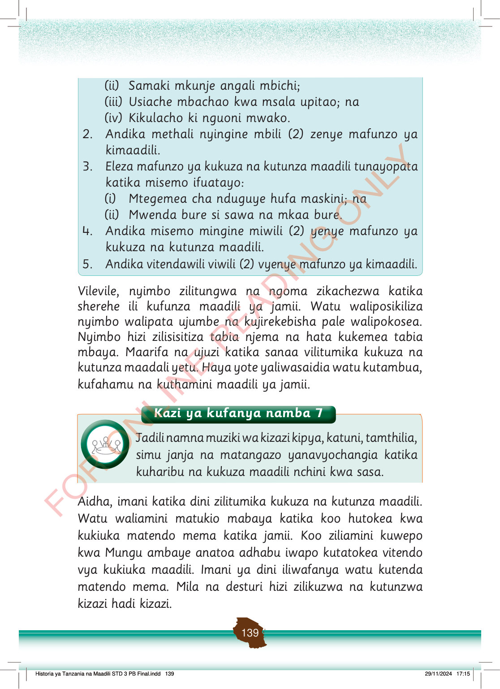

(ii)
Samaki mkunje angali mbichi;
(iii)
Usiache mbachao kwa msala upitao; na
(iv)
Kikulacho ki nguoni mwako.
2.
Andika methali nyingine mbili (2) zenye mafunzo ya kimaadili.
3.
Eleza mafunzo ya kukuza na kutunza maadili tunayopata katika misemo ifuatayo:
(i)
Mtegemea cha nduguye hufa maskini; na
(ii)
Mwenda bure si sawa na mkaa bure.
4.
Andika misemo mingine miwili (2) yenye mafunzo ya kukuza na kutunza maadili.
5.
Andika vitendawili viwili (2) vyenye mafunzo ya kimaadili.
Mafunzo yake ni kuwa mtu anatakiwa kufanya kazi na kujitegemea badala ya kutegemea wengine.
Mafunzo yake ni kuwa ni bora kujishughulisha na kutafuta jambo la kufanya kuliko kukaa bure bila kufanya kazi.
Vilevile, nyimbo zilitungwa na ngoma zikachezwa katika sherehe ili kufunza maadili ya jamii.
Watu waliposikiliza nyimbo walipata ujumbe na kujirekebisha pale walipokosea.
Nyimbo hizi zilisisitiza tabia njema na hata kukemea tabia mbaya.
Maarifa na ujuzi katika sanaa vilitumika kukuza na kutunza maadili yetu.
Haya yote yaliwasaidia watu kutambua, kufahamu na kuthamini maadili ya jamii.
Kazi ya kufanya namba 7
Jadili namna muziki wa kizazi kipya, katuni, tamthilia, simu janja na matangazo yanavyochangia katika kuharibu na kukuza maadili nchini kwa sasa.
Aidha, imani katika dini zilitumika kukuza na kutunza maadili.
Watu waliamini matukio mabaya katika koo hutokea kwa kukiuka matendo mema katika jamii.
Koo ziliamini kuwepo kwa Mungu ambaye anatoa adhabu iwapo kutatokea vitendo vya kukiuka maadili.
Imani ya dini iliwafanya watu kutenda matendo mema.
Mila na desturi hizi zilikuzwa na kutunzwa kizazi hadi kizazi.